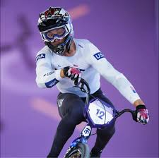
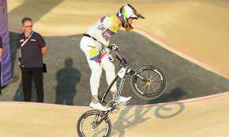
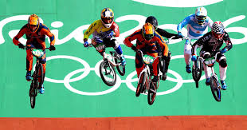
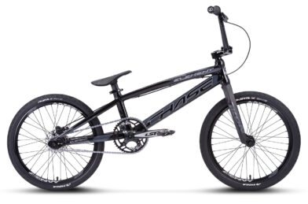

EL BMX ES UN DEPORTE QUE EN COLOMBIA A AVANSADO MUCHO Y ES CUNA DE MUHCOS CAMPEONES

?sabes realmente que es el Bmx?
En este articulo te diremos todo lo que nesesitas saber sobre este
El bmx o super cros es un deporte olimpico que conciste en unas series de carreras que van eliminando a competidores asta llegar a la final donde se definen los 3 ganadores
Y todo lo que nesesitas saber de este deporte

Lo primero de lo que hablaremos es de como son las competencias
Las competencias de dividen en 4 faces
- Rondas clasificarorias: Donde se hacen 3 rondas para eliminar competidores para la roda 2
- Cuartos de final: El antepenultimo filtro de competidores donde quedan la mitad de los de la ronda pasada y se elimina otra mitad
- Semifinales: Aqui se elimina la otra mitad de los competidores para que solo queden 8 competidores para la ultima ronda
- Final: La ultima carrera donde se premiara a los primeros 3
Hablemos de los conceptos basicos o de las tecnicas basicas de el Bmx
Cuando la gente habla o conce por primera vez el bmx piensa que es un deporte odne gana el que mas pedaee pero aunque es una paarte muy importante ay muchas otras tecniacas que nos ayudan a ganar velocidad
Paso arras: Esta es la tecnica principal y podriamos decir que la mas importane ya que es la que nos ayuda a avansar y a generar velocidad por medio de impulsar la bicsicleta con los brasos y piernas

Sostendio: Esta es una tecnica intermedia y nos permite ganar mucha velocidad al usar la energia cinetica de cuando levantamos la llanta de alfrente para impulsarla mas duro asia abajo lo que nos permite impulsarnos trasformando esa energia cinetica vertical en horizontal
Salto: Esta es la tecnica mas avansada de todas y concicte en algo parecido a el sostenido ya que trasformamos la energia cinetica vertical a horizontal con la diferencai que esta es muhco mayor ya que levantamos tanto la rueda de adelante como la de atras esto nos permite tener mejor impulso a la hora de empujar ademas de que en muchas pistas a las categorias de mas alto nivel se lex exige hacer un recorrido de pista que implica saltos muy largo conocidos como el carril pro
Ahora vamos a hablar de lo componentes de una bisicleta para raicing
| Marco | Tenedor | Rines | Potencia | Llantas | Timon | Pedales | Frenos |
|---|---|---|---|---|---|---|---|
| El marco es la parte principal de la bisicleta ya que es digamos el nucleo donde se intalan el resto de partes | Este es donde se intala el timon, ruda delantera y digamos que es como los huesos de la parte delantera | Los rines son la parte interna de las rudedas y se compone de aro y de radios | La potencia es lo que genera el movimiento de la bicicleta y se esta definida por la relacion entre dos engranajes conocidos como plato y piñon | Las llantas es lo que recubre o va por encia de el rin y se podria interpretar como los zapatos de la bicicleta | El timon es de donde se controla la direccion de la bicicleta | Es donde se ponen los pies y ay dos tipos (Clips y Planos) donde en uno por medio de zapatillas se adiere a los pedales y los planos que son los de toda la vida | Los frenos son muy importantes pues porque es lo que nos permite controlar la velicidad y ay de muchos tipos como de borradores, de disco, hidraulico y otros mas |
Y existen diferentes marcas de componentes que varian muchas cosas como materiales o formas como por ejemplo
Y una variedad mas
